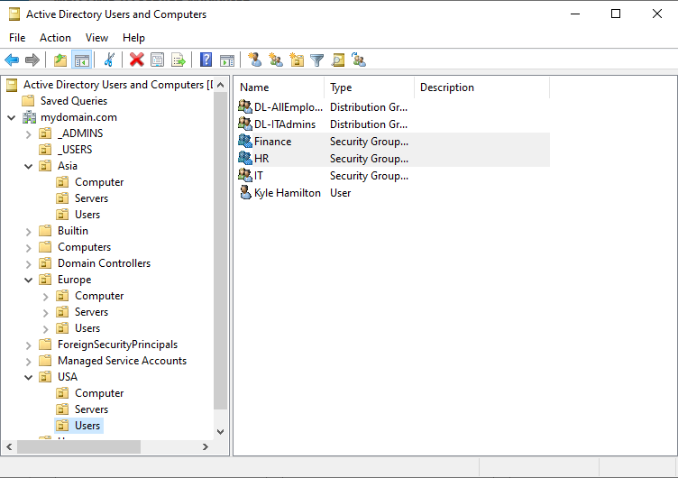
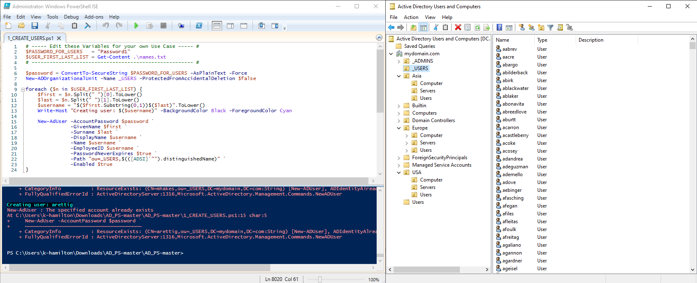
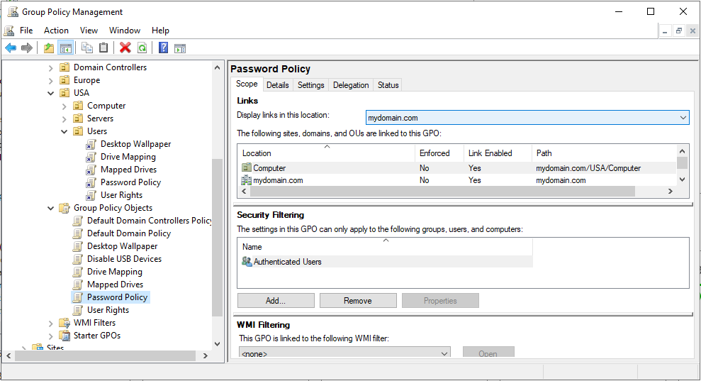
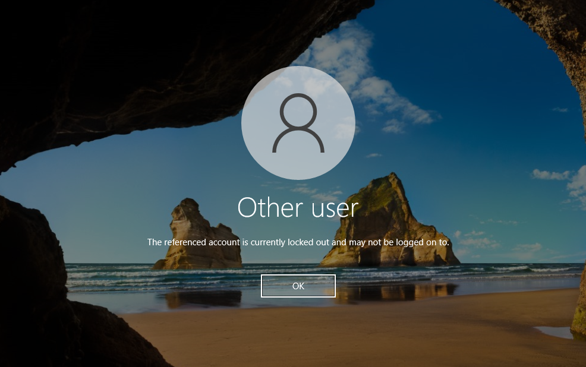

🧱 Active Directory Lab
This log documents my setup and experimentation with Active Directory in my virtual home lab. I created a Windows Server 2022 Domain Controller (DC), configured users and organizational units (OUs), and connected the Windows 10 client to the domain for testing authentication, GPOs, and red team techniques.
Domain Controller Installation/Setup
I began by downloading a Windows Server 2022 ISO file from the Microsoft website and setting up the VM for it in Virtual Box. I then promoted the fresh Windows Server 2022 instance to a Domain Controller using the Server Manager. The domain was named mydomain.com. I configured DNS alongside AD DS and ensured the server had a static IP address on the internal network.
Organizational Units & User Creation using Powershell Scripting
Using the Active Directory Users and Computers (ADUC) console, I created multiple OUs to simulate departments like HR, IT, Finance and added test users and groups within them. To populate the environment, I automated user creation using a PowerShell script that imported 1,000 randomly generated user accounts from a text file. This streamlined approach allowed me to efficiently build a diverse user base for testing policies and enumeration tools.
Group Policy Object and Secuirty Policy Creation/Testing
Utilizing the Group Policy Management Console (GPMC), I created and applied several Group Policy Objects (GPOs) and local security policies. These included policies such as mandatory desktop wallpapers, enforced password complexity and expiration, and restricted user rights. These configurations helped establish control boundaries and simulate the security posture of a corporate domain.
To validate the effectiveness of these policies, I conducted testing on a domain-joined Windows 10 client. Specifically, I confirmed that the Account Lockout Policy was functioning as intended—locking users out for 30 minutes after three failed login attempts.
Conclusion
This Active Directory lab setup provided a solid foundation for exploring enterprise-grade identity and access management. By implementing users, OUs, GPOs, and security policies, I created an operational domain environment ready for blue and red team testing. This environment will continue to evolve as I simulate more advanced attacks, monitor defensive telemetry, and test endpoint hardening techniques.
Lessons Learned
- Windows Server 2022 AD Domain Controller configuration
- Joining client machines to the domain
- Managing users, groups, and GPOs in ADUC
Challenges Encountered
- Initial DNS misconfiguration prevented domain joining from clients
- GPO changes not taking effect until forced via
gpupdate /forceand system reboots